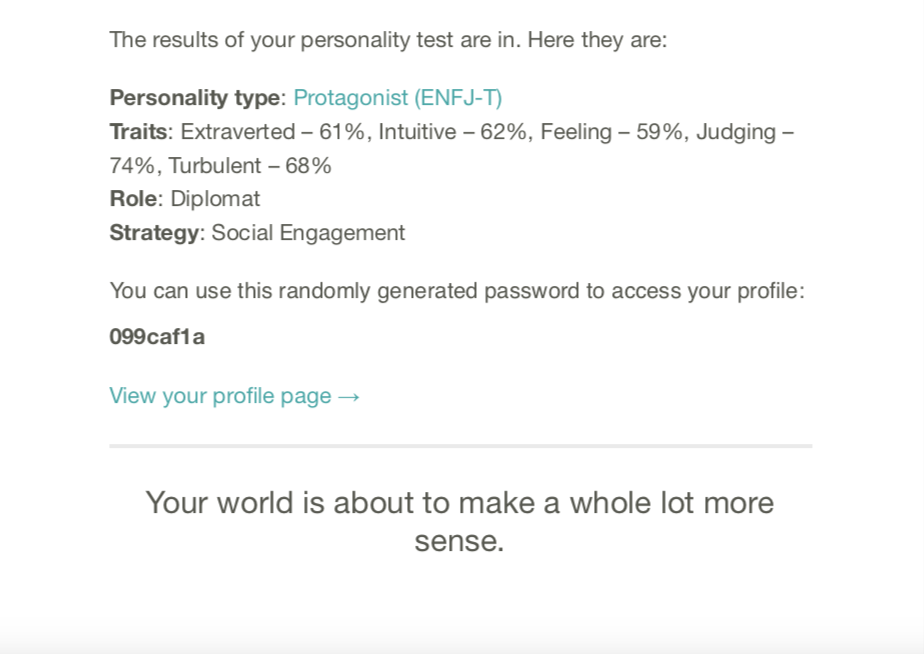
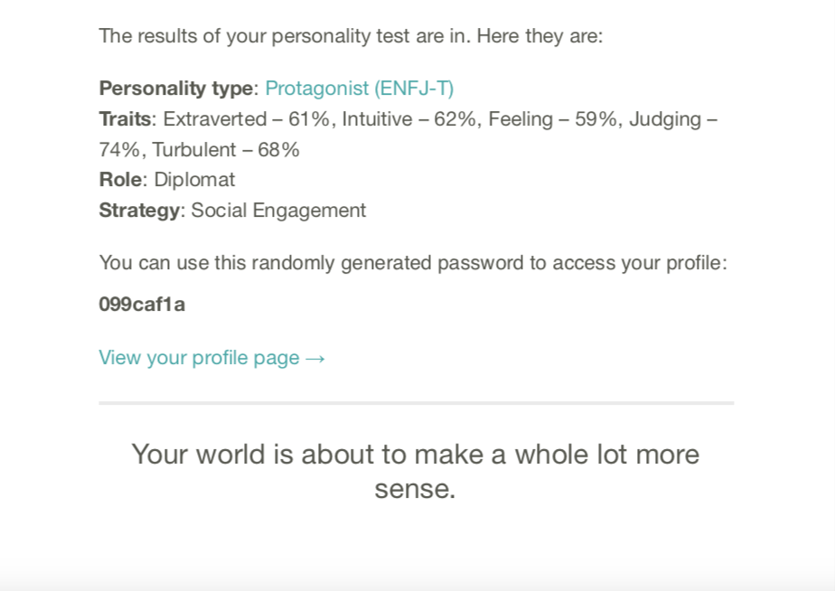

Student no. s3997602
Student email s3997602@student.rmit.edu.au
Australian of British extraction
Attended Bayswater secondary College
2002-2005 Diploma of viticulture and enology, Swinburne, Lilydale.

Currently employed as Musician, bar attendant, cleaner and gardener.
I’ve always been willing to give anything a go. I think my resume reflects that. I taught music some years ago from mid year for 6 months at a P-12 school when they were unable to get a real music teacher. Mostly to the secondary pupils but a few hours with a large group of the primary school age students. It was a lot of fun. Unfortunately a teacher did apply for the position at the end of the school year and therefore I did not continue in that role the following year. It was a job that I look back fondly at and would not hesitate to do again.
I play music fairly regularly either on my own, with my band, Ally And The Cats or as a back up musician and vocalist. With the new knowledge I am currently acquiring I will soon get a music website up and running. For now I just have a Facebook page, https://www.facebook.com/allyandthecat
2 dogs, Cherry, Red Heeler x and Cally, Hunterway/Blue Heeler x Kelpie. "The best dogs ever but all dogs are"

Another great passion of mine, environment and the natural world. All things renewable, recyclable, reusable. Self sufficiency and sustainability. Personal involvement in Habitat 141 with Greening Australia which aims to create a corridor from the Murray River to the coast.
More information at-
https://www.habitat141.org.auAfter an initial interest in the space industry and NASA as a child and into secondary school, but the discovery that only USA citizens could work there back then put a stop to those dreams, I avoided computers for years, total luddite until around 12 years ago when I got my first computer. I still only used it for emails and social media, a bit of googling, finding lyrics or checking chords in songs I was covering. But more recently I had to do some reprogramming of a Victron fully Off Grid solar system which piqued my interest. Amazing technology and definitely something I would like to look at more thoroughly.
I have a friend in IT and I watched him working on a bulky old windows 7 machine I had inherited from my Mother. Wow! If only I could do that!!

[photo credit Richard Ayoade, The IT Crowd]
I saw an online advert for RMIT one evening and sent an enquiry form, the phone rang minutes later, it was a member of the RMT enrolment team whom I spoke with at length regarding career possibilities and what studies I would require to obtain employment in those areas. An introduction to IT was deemed the best place to start.
I had to realise the difference between ‘dream’ job and ‘ideal’, one that is actually obtainable. I would love to work in the environmental sector but most require far more experience and education than is realistically obtainable to me at this stage in my life. Another field I have a great interest in is reconciliation. But the ability to work remotely is what first attracted me to IT and would be a huge advantage.
The PDF attached is for my dream job. Totally out of reach but maybe in my next life. Trust for Nature is the kind of employer I will send my resume to on the off chance something suitable comes up when I have completed my IT studies.
Link to the PDF 
